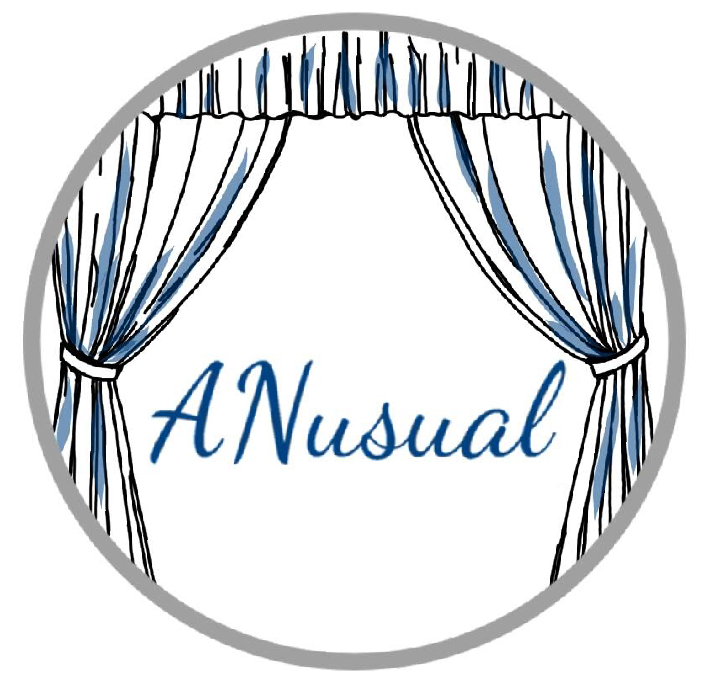

← Back to professional work
Professional Work / UX & Web / 2024–2025
Areté Surfaces — Digital Brand Presence
Branding, multi-page web design and audience acquisition
Figma
WordPress
Search Console
UX design

Overview
A brand and web presence project combining identity development, website architecture, content strategy and lead-generation flows.
Approach & contribution
- Designed the website, wrote web copy, and developed creative assets.
- Built a multi-page content hierarchy with SEO-oriented navigation.
- Established a contact-flow and organic social publishing approach.
Outcome & status
Delivered a coherent web and social brand presence; performance figures were not supplied.